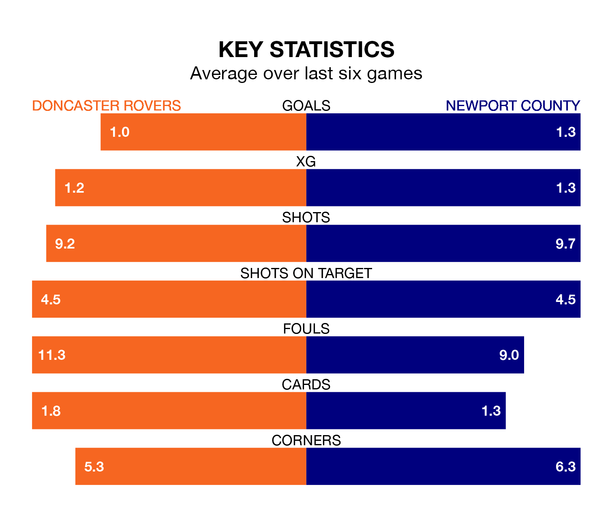

Doncaster Rovers are on a poor run ahead of hosting Newport County at the Eco-Power Stadium on Saturday, with just four points collected from their last six games.
The Rovers have picked up one win and one draw in their last six EFL League Two games, and face an Exiles side whose last six games have brought one win and three draws.
In Will Evans, Newport have one of the league's sharpest shooters so far this season. He has notched 15 goals in 26 appearances, to sit third in the scoring charts.
His goal rate of one every 142 minutes is quicker than that of Joe Ironside, Doncaster's top scorer with a goal every 198 minutes, and a total of 11 goals in 26 games.
Rovers are 19th in the table after 26 games, of which they have won eight and drawn four, earning 28 points.
County are one place ahead of the Rovers in 18th, with eight wins and seven draws putting them on 31 points.
With 31 goals in 26 games so far this season, the home side are scoring at below the league average rate with 1.2 goals per game. And they are conceding more than average, letting in 46 goals at a rate of 1.8 per game.
The Exiles, meanwhile, are average scorers, with 1.5 goals per game. They have conceded 1.7 goals per game.
In the last three years, Doncaster and Newport have played each other on three occasions. Doncaster won one of them and Newport the other.
Their last meeting was on August 12, when Newport won 4-0 at home.
Doncaster's last match was on January 6, a 3-1 loss against Harrogate Town, with Tommy Rowe getting the goal for the Rovers.
Newport drew 1-1 with Sutton United last time out, on January 1, with Shane McLoughlin on the scoresheet.
Saturday's match will be refereed by Alex Chilowicz, who has taken charge of two EFL League Two games so far this season, issuing no red cards and booking six players. He has not awarded any penalties.
He is yet to oversee a match featuring either Doncaster or Newport this season.
Updated: 13:38 (UTC), 10/01/24